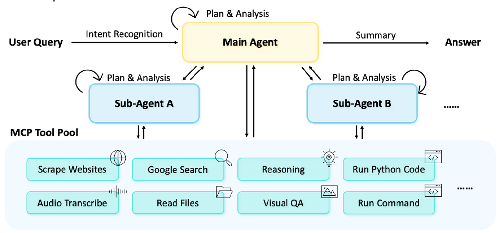

🤖 MiroFlow Agentic Foundation Framework
MiroFlow provides a flexible framework for building and deploying intelligent agents capable of complex reasoning and tool use.
Workflow Overview

Multi-Stage Agentic Process
MiroFlow handles user queries through a multi-stage and agentic process designed for flexibility and depth. The workflow is organized as follows:
-
Intent Recognition & Query Augmentation
LLMs analyze user input to detect intent and refine the query. -
Planning & Task Orchestration
The main agent drafts an execution plan, invokes tools, and coordinates sub-agents. -
Delegation to Sub-Agents
Specialized agents (e.g., agent-browsing) handle complex or domain-specific tasks. Sub-agents independently plan, act, and execute tool calls as needed. -
Tool Access via MCP Servers
When external capabilities are required, agents leverage specialized tools by connecting to MCP (Model Context Protocol) servers. -
Result Synthesis & Output Alignment
After task completion, a dedicated summary process synthesizes results, ensuring the output is high-quality and aligned with user instructions (or benchmark formats).
Architecture Components
Directory Structure
All core components are located in the src/ directory.
src/
├── core/
│ ├── pipeline.py # Pipeline: coordinates task execution
│ └── orchestrator.py # Orchestrator: manages LLM ↔ tool flow
│
├── llm/
│ ├── client.py # Unified LLM client interface
│ ├── provider_client_base.py # Base class for LLM providers
│ ├── util.py # LLM utility functions
│ └── providers/ # Provider-specific implementations
│ ├── claude_anthropic_client.py # Anthropic Claude client
│ ├── claude_newapi_client.py # Claude via NewAPI
│ ├── claude_openrouter_client.py # Claude via OpenRouter
│ ├── deepseek_newapi_client.py # DeepSeek via NewAPI
│ ├── gpt_openai_client.py # OpenAI GPT client
│ ├── gpt_openai_response_client.py # OpenAI response client
│ ├── mirothinker_sglang_client.py # MiroThinker via SGLang
│ └── qwen_sglang_client.py # Qwen via SGLang
│
├── tool/
│ ├── manager.py # Tool Manager: MCP server connector
│ └── mcp_servers/ # Individual MCP tool servers
│ ├── python_server.py # Code execution (E2B integration)
│ ├── vision_mcp_server.py # Visual perception & image analysis
│ ├── searching_mcp_server.py # Web search & retrieval
│ ├── audio_mcp_server.py # Audio transcription & processing
│ ├── reasoning_mcp_server.py # Enhanced reasoning capabilities
│ ├── reading_mcp_server.py # Document processing & file reading
│ ├── browser_session.py # Persistent browser session management
│ └── utils/ # Tool utilities
│ └── smart_request.py # Smart request handling
│
├── utils/
│ ├── io_utils.py # Output formatting utilities
│ ├── parsing_utils.py # Text parsing utilities
│ ├── summary_utils.py # Summary generation utilities
│ └── tool_utils.py # Tool configuration helpers
│
└── logging/ # Task logging & metrics
├── logger.py # Main logging interface
└── task_tracer.py # Task execution tracing
Core System 💻
Core Components
Pipeline (src/core/pipeline.py)
Main entry point that coordinates task execution, creates and manages all components, handles error recovery, and returns final results. Initializes LLM clients, tool managers, and orchestrator for complete task processing.
Orchestrator (src/core/orchestrator.py)
Central coordination hub that manages multi-turn conversations, parses tool calls, executes tools, delegates to sub-agents, and handles the complete agent workflow. Supports features like message ID generation, Chinese context handling, and output formatting.
LLM Client (src/llm/client.py)
Unified interface supporting multiple language model providers including Anthropic Claude, OpenAI GPT, Google Gemini, Qwen, DeepSeek, and MiroThinker models. Provider-specific implementations in src/llm/providers/ handle different API formats and capabilities.
Tool Integration 🔧
Tool System Components
Tool Manager (src/tool/manager.py)
Comprehensive MCP server connection manager that handles tool discovery, maintains persistent connections, manages tool blacklisting, and provides error handling. Supports both local and remote MCP servers with automatic tool definition retrieval.
MCP Servers (src/tool/mcp_servers/)
Individual tool implementations built on FastMCP protocol. Provides extensive capabilities including:
- Code Execution (
python_server.py): E2B-powered Python sandbox for safe code execution with pre-installed packages - Visual Perception (
vision_mcp_server.py): Image and video analysis capabilities with format detection - Web Search (
searching_mcp_server.py): Google search integration with content filtering and retrieval - Audio Processing (
audio_mcp_server.py): Audio transcription and processing capabilities - Enhanced Reasoning (
reasoning_mcp_server.py): Advanced reasoning tool using high-quality language models - Document Processing (
reading_mcp_server.py): File reading and document analysis across multiple formats - Browser Sessions (
browser_session.py): Persistent browser session management for web interaction - Smart Utilities (
utils/smart_request.py): Intelligent request handling and optimization
Agent System 👷
Agent Architecture
Main Agent
The primary agent that receives user tasks and coordinates the overall execution. It can directly use reasoning tools and delegate complex tasks to specialized sub-agents. Main agents support different prompt classes for various benchmarks and use cases.
Sub-Agents
Specialized agents designed for specific domains and capabilities:
agent-worker: General-purpose sub-agent with access to comprehensive tool sets including web search, file processing, code execution, audio/video analysis, and document reading- Each sub-agent maintains dedicated tool configurations and custom prompts
- Sub-agents can operate independently with their own LLM configurations and turn limits
- Agent definitions and prompts are managed through the configuration system in
config/agent_prompts/
Support Systems ⚙️
Supporting Infrastructure
Configuration System (config/)
Hydra-powered YAML configuration for agents, LLMs, and benchmarks
Output Formatter (src/utils/io_utils.py)
Intelligent response formatting that adapts to various benchmark requirements
Parsing Utilities (src/utils/parsing_utils.py)
Text parsing and processing utilities
Summary Utilities (src/utils/summary_utils.py)
Summary generation and processing utilities
Task Logger (src/logging/)
Comprehensive logging for agent interactions, tool executions, and performance metrics
Configuration
Configuration System
MiroFlow uses a flat Hydra-based configuration system with agent configurations directly in the config/ directory. Each agent configuration combines LLM settings, tool configurations, and agent behavior parameters.
Configuration Structure
config/
├── agent_quickstart_1.yaml # Quick start agent configuration
├── agent_gaia-validation.yaml # GAIA validation agent configuration
├── agent_mirothinker.yaml # MiroThinker model configuration
├── agent_prompts/ # Agent prompt classes
│ ├── base_agent_prompt.py # Base prompt class
│ ├── main_agent_prompt_gaia.py # GAIA-specific prompts
│ ├── main_boxed_answer.py # Boxed answer extraction
│ ├── main_gaia.py # GAIA main agent prompts
│ └── sub_worker.py # Sub-agent prompts
├── benchmark/ # Benchmark configurations
│ ├── default.yaml # Default benchmark settings
│ └── gaia-validation.yaml # GAIA validation benchmark
├── tool/ # Tool configurations
│ ├── tool-code.yaml # Code execution tool
│ ├── tool-searching.yaml # Web search tool
│ ├── tool-reasoning.yaml # Reasoning tool
│ ├── tool-reading.yaml # Document reading tool
│ ├── tool-image-video.yaml # Image/video processing tool
│ └── tool-audio.yaml # Audio processing tool
└── no-in-use-*/ # Archive of legacy configurations
Agent Configuration Example
Basic Agent Configuration - config/agent_quickstart_1.yaml
defaults:
- benchmark: gaia-validation
- override hydra/job_logging: none
- _self_
main_agent:
prompt_class: MainAgentPromptBoxedAnswer
llm:
provider_class: "ClaudeOpenRouterClient"
model_name: "anthropic/claude-3.7-sonnet"
temperature: 0.3
max_tokens: 32000
openrouter_api_key: "${oc.env:OPENROUTER_API_KEY,???}"
openrouter_base_url: "${oc.env:OPENROUTER_BASE_URL,https://openrouter.ai/api/v1}"
tool_config: [] # Main agent with no tools (basic setup)
max_turns: -1
max_tool_calls_per_turn: 10
add_message_id: true
chinese_context: "${oc.env:CHINESE_CONTEXT,false}"
sub_agents:
agent-worker:
prompt_class: SubAgentWorkerPrompt
llm:
provider_class: "ClaudeOpenRouterClient"
model_name: "anthropic/claude-3.7-sonnet"
temperature: 0.3
max_tokens: 32000
openrouter_api_key: "${oc.env:OPENROUTER_API_KEY,???}"
tool_config:
- tool-reading # Document processing capability
max_turns: -1
max_tool_calls_per_turn: 10
output_dir: logs/
data_dir: "${oc.env:DATA_DIR,data}"
Advanced Agent Configuration
Advanced Configuration - config/agent_gaia-validation.yaml
main_agent:
prompt_class: MainAgentPrompt_GAIA
llm:
provider_class: "ClaudeOpenRouterClient"
model_name: "anthropic/claude-3.7-sonnet"
temperature: 0.3
max_tokens: 32000
tool_config:
- tool-reasoning # Enhanced reasoning capabilities
input_process:
o3_hint: true # Use O3 hints for better performance
output_process:
o3_final_answer: true # Extract final answers using O3
sub_agents:
agent-worker:
tool_config:
- tool-searching # Web search capabilities
- tool-image-video # Visual content processing
- tool-reading # Document processing
- tool-code # Code execution
- tool-audio # Audio processing
Tool Configuration
Tool Configuration Example - config/tool/tool-searching.yaml
name: "tool-searching"
tool_command: "python"
args:
- "-m"
- "src.tool.mcp_servers.searching_mcp_server"
env:
SERPER_API_KEY: "${oc.env:SERPER_API_KEY}"
JINA_API_KEY: "${oc.env:JINA_API_KEY}"
REMOVE_SNIPPETS: "${oc.env:REMOVE_SNIPPETS,false}"
REMOVE_KNOWLEDGE_GRAPH: "${oc.env:REMOVE_KNOWLEDGE_GRAPH,false}"
REMOVE_ANSWER_BOX: "${oc.env:REMOVE_ANSWER_BOX,false}"
Benchmark Configuration
Benchmark Configuration Example - config/benchmark/gaia-validation.yaml
Key Features
Architecture Highlights
Multi-Agent Architecture
- Main Agent: Coordinates overall task execution and reasoning
- Sub-Agents: Specialized agents with dedicated tool sets for specific domains
- Dynamic Delegation: Intelligent task routing based on capability requirements
Advanced Configuration
- Flexible LLM Support: Multiple provider integrations with unified interface
- Tool Modularity: Mix and match tools based on task requirements
- Benchmark Integration: Pre-configured setups for popular AI benchmarks
- Environment Management: Secure API key and environment variable handling
Production Features
- Error Recovery: Robust error handling and graceful degradation
- Logging & Tracing: Comprehensive task execution monitoring
- Concurrent Execution: Parallel task processing capabilities
- Resource Management: Efficient tool connection pooling and cleanup
Examples
Check out our example applications to see agents in action.
Documentation Info
Last Updated: September 2025 · Doc Contributor: Team @ MiroMind AI